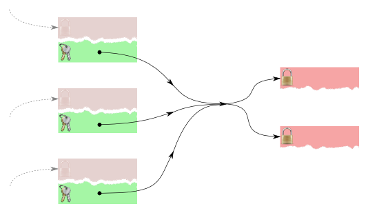

Bitcoin addresses are used to receive payments, but not to send them: there is no concept of a "from" address in Bitcoin.
A common exchange on Bitcoin forums goes like this:
- X: How do I see the address that a transaction came from?
- or: Why does my wallet software not tell me where transactions came from?
- Y: (You can’t,) because there is no ‘from’ address.
- X: What the hell do you mean? My transaction came from somewhere! This is an attempt to explain readably but fairly completely in one easily linkable place.
It depends what your definition of ‘from’ is
OK, so before you had these coins, someone else had them (2.1) — let’s say your friend Monica paid you back her share of your restaurant bill right there in the restaurant. The reason for avoiding the word ‘from’ is that in common English usage it’s tempting to assume that if something came from somewhere, and you need to return it or correspond later about something else, that’s where you should return it to/reply to. In the case of Bitcoin transactions (and actually often in the real world) this is an unreliable assumption; it confuses the who with the where/how. The distinction isn’t just pedantry; people (especially ?Satoshi Dice customers) have made this mistake and have lost money, so it’s primarily an effort to minimise such losses in future (2.2).
I suspect the following factors have contributed to the popularity of the “from” misconception:
- We often learn by comparing new phenomena to those we’re already familiar with, and in most other payment systems and sender/recipient models the sender has a single permanent identifier.
- Most blockchain explorers (2.3) attempt to show all last-sent-to addresses for a transaction in an effort to be user-friendly, and either show a suggestive arrow or even (in the case of blockexplorer.com) actually label the last-sent-to as “From”. All those I checked represent addresses as having a “balance” which tempts people to think addresses operate like bank accounts.
- The depiction or use of addresses in some local wallets somewhat encourages it:
- Multibit prefers simpler key management over privacy, sending change “back” to one of the last-sent-to addresses
- Electrum represents addresses as having balances
- Vanity address use can easily be interpreted as meaning there’s a one-to-one relationship between people and addresses.
2.1: Unless you were ?Coinbasemining.
2.2: Secondarily, understanding why it’s unreliable is useful both for sound understanding of Bitcoin and for writing robust financial code that doesn’t lose other people’s money or cause support headaches for you.
2.3: blockr.io At least , , and (at time of writing).
Why there’s no ‘from’ address
By analogy
Relying on things that seem like ‘from’ addresses would be like:
- getting on a train/bus that just arrived from where you want to go, in the hope that all trains/buses always turn around and head back the way they came
- trying to reply to mail you recieved in a re-used envelope — by peeling the sticker bearing your address off, and using the previous address you find underneath
More technically
At the protocol level, when looking at a transaction in isolation as it appears on the wire or in a block, no part of it directly encodes a “from”. A transaction provides solutions for some challenges and poses some new challenges, both in the form of scripts (5.1) . Here’s one way to depict that for a transaction like e9e2....5063:

None of the prev_outs in the decoded version directly encode addresses in any form.
It does encode indirect references to unspent coins, and maybe for some unspent coins you can infer something about their previous destination, but conceptually those are at best references to previous “to” addresses.
Even that inference is not always sensible (advanced transactions will probably defeat most block explorers) and is never necessary or appropriate in everyday use of Bitcoin. The rest of this post will use the term “last-sent-to address” (5.2).
5.1: Although in practice the network currently limits solution scripts to providing solutions directly; solution scripts can’t compute anything.
5.2: Because transactions are multiple-input, multiple-output, it’s really “all last-sent-to addresses”, since without assumptions you’ve no information about whether any one is more valid than any other.
Unreliable assumptions
So when and how does sending to the last-sent-to address fail? Suppose you carefully reconcile your personal accounts at the end of each month and notice then that Monica overpaid. Now you need to return some of the money. If you send to the last-sent-to address, you’re relying on the assumptions that Monica:
- uses a local wallet rather than a shared/web wallet
- didn’t drop her phone in a puddle in the meantime
- didn’t have her phone stolen in the meantime
- used coins she received via a simple transaction to pay you
- knows (or can definitely work out) who is sending that money to her and why
- is comfortable with the security implications of address re-use
- is comfortable with the privacy implications of address re-use
If any of these assumptions turn out to be untrue you’ll lose coins, inconvenience Monica, or both. Since this is more than you’re likely to know with sufficient confidence about her without checking with her, it’s safer and easier simply to ask her for the correct address to send the overpayment to (hopefully a freshly generated, dedicated one) when you communicate.
The following sections briefly look at why each listed assumption about the last-sent-to address is risky.
- ?Recipient created the private key|
- ?Recipient still has a copy of the private key|
- ?Recipient has maintained exclusive control of the private key|
- ?Recipient used coins they recieved through pay-to-pubkey-hash transactions|
- ?Recipient can work out the origin reliably|
- ?Recipient is comfortable with the security implications of address re-use|
- ?Recipient is comfortable with the privacy implications of address re-use|
Recipient created the private key
Many web wallets/exchanges (7.1) (shared wallets) manage addresses and private keys for you, and pool all deposited coins. After you deposit coins to such a site they will almost always use coins you deposited to fulfill other customers’ withdrawals, maintaining your balance only as a centralised database entry. Similarly, when you go to withdraw coins to an external address, your withdrawal will probably consist entirely of coins last-sent-to some other customer’s deposit address and/or addresses used purely internally by the site to receive change.
FIXME: diagram of typical shared wallet coin-pooling, picturing your freshly deposited coins being used satisfy another customer’s withdrawal, then someone else’s coins being used to satisfy yours.
In that case, the address Monica’s coins were last-sent-to might just be the deposit address of a completely unrelated user of the same shared wallet Monica uses, or at best, a change address used purely internally by the shared wallet, not associated with any particular user. Either way, Monica would be unlikely ever to recover what you sent.
This wouldn’t be a problem if the last-sent-to address (7.2) was created with a local wallet such as Bitcoin QT, Electrum or Multibit — but you can’t safely assume that, and even if you know Monica used a local wallet recently she may have changed her habits when creating that address, or switched wallets since.
This doesn’t mean shared wallets are misbehaving by pooling deposits; it’s necessary for keeping most coins in cold storage. The model has other benefits too; they can make more efficient use of block space (and reduce fees as a result) by grouping withdrawals (7.3) and by handling transfers between customers internally, and provided they protect/expire their logs, they increase privacy.
7.1: Besides some sites that provide nothing but wallet services, this includes some centralised exchanges, peer-to-peer or escrow-based exchanges, betting sites, mining pools — any site that holds coins on your behalf and doesn’t give you exclusive access to your private key, or sufficient multisig control of your coins.
7.2: Or, more correctly, if the private key from which that address was derived was created with a local wallet.
7.3: Bitstamp does this.
Recipient still has a copy of the private key
Monica may have lost all copies of the last-sent-to address’s private key since paying you, so you may be destroying coins by sending them there. While this is unlikely if the interval is short, there are a multitude of ways to lose data:
- accidental/naïve deletion; especially:
- switching devices without keeping old wallet data
- switching wallet software without keeping old wallet data
- spending a paper wallet or “physical” bitcoin then discarding it
- physically losing the media
- data corruption
- device failure
- forgotten password or death of the owner
- bad app uninstall procedures
and most people are pretty poor at keeping suitably regular/redundant backups. Even if Monica is fantastic at keeping regular backups, perhaps the private key is physically distant or requires some tedious recovery procedure, so it might be very inconvenient.
Recipient has maintained exclusive control of the private key
Monica may have had her private keys extracted from her by an attacker:
- fallen prey to malware
- been socially engineered
- been physically robbed/mugged
- suffered from a bug in a common wallet
or may have been negligent with it/underestimated attacks:
- used a weak password
- left her phone/laptop unattended and unlocked
- used her wallet from a USB stick in an Internet café
and have taken measures to recover, generating fresh keys/addresses.
Another way Monica might not have exclusive control of the key is if she received the coins by someone handing her a paper wallet, as a present or tip. While a careful giver would be sure to wipe the private key from their wallet once they were sure it was spent, they may have forgotten, gone rogue or fallen victim to a wallet-stealing malware themselves.
Recipient used coins they recieved through pay-to-pubkey-hash transactions
If Monica received those coins she used to pay you at a multisignature address, she may now lack sufficient signing keys to release anything you send there, and it may be inconvenient or impossible for her to get signatures from the other keyholders. For instance, maybe she used Bitrated and had a dispute resolved in her favour but the arbitrator she chose since discarded or lost their key, went rogue or died. Multisignature addresses are just one use of pay-to-script-hash, so you can’t even infer that a pay-to-script-hash is a multisignature address; she may have used a more exotic variety.
Even if she received those coins with pay-to-pubkey-hash transactions (10.1), her transaction to you may have consumed multiple inputs. How are you going to distribute your repayment between those? Equally? Pick one at random? Existing use of CoinJoin probably involves people participating in a join between external transactions, as a separate privacy enhancement step, but as more implementations appear perhaps clients will support direct payments via CoinJoins. That would be a similar situation to the shared wallets point above.
10.1: Or, I guess, pay-to-pubkey.
Recipient can work out the origin reliably
This is more about respecting a payee’s preferred payment method and making life easy for them than about avoiding loss. To ease accounting (and other reasons) Monica might always create a dedicated address for every receive, and label it with the name of the expected sender and purpose of the transaction. If you send to an address Monica gave out to her employer, her accounts won’t balance. Assuming her employer and you both follow best practices regarding privacy/address re-use, she can’t tell anything about the mystery incoming funds with any certainty.
In some business (and perhaps tax return) situations having an inexplicable imbalance on an account can be a serious compliance problem; while folks in that situation could delete all related keys to prevent that, you can’t be sure they have and even if they did, you’re destroying coins.
Recipient is comfortable with the security implications of address re-use
Established security best practices discourage address re-use because when Monica sends you the restaurant bill, she reveals the public key for the last-sent-to address; before that, the world knew only the address (a hash of the public key) and would have had to perform a pre-image attack to find the public key. While it’s pretty unlikely, ECDSA is relatively new and could be found to be weak; private keys may somehow be found to be easily derived from public ones, exposing any unspent coins where the public key is known.
Re-using addresses also probably increased the losses suffered via the Android SecureRandom bug, since exploiting it required seeing two transactions with the same last-sent-to and the same r values.
The discoverers of the OpenSSL ECDSA “FLUSH+RELOAD” attack estimated that under the right conditions they could recover a private key by observing as few as 200 signatures (in Bitcoin’s case, typical transactions) made with it.
Hopefully those are the last bugs we’ll see related to re-use, but we can’t be sure.
Since it’s Monica’s money at stake here, the decision on whether these threats are significant should be up to her.
Recipient is comfortable with the privacy implications of address re-use
Established privacy best practices discourage address re-use because it reduces privacy both for you and, infectiously, for all other users (most directly, people you transact with, but also to a lesser extent the people they transact with, and so on). Even if you feel the simpler key management is worth the privacy cost to you and the rest of the network, it’s more polite to avoid inflicting that cost on Monica any more than you already are — again, you should let her make her own decision on this.
Solutions
Perhaps we’re doomed, and Bitcoin will never see mass adoption because of traps like these that await the unwary. On the other hand, things can be done.
If you’re telling someone about Bitcoin you should avoid mentioning the concept, except to explain how, in this respect, Bitcoin doesn’t operate like other payment systems or sender/receiver systems they might know.
Tools like block explorers and wallets should either refrain from showing inferences altogether, or should show them only in an advanced mode — with the right name and a prominent list of reasons why they’re of academic interest only. Perhaps if folks make enough noise, they will.
Uptake of the payment protocol and other such measures that deliver refund addresses in the same communication as payment requests/payments should be encouraged. These hide such dirty temptations from the user.
Privacy-protecting wallets should be preferred, since those avoid address re-use anyway.
2014-05-30: incorporate feedback from Andrew Poelstra and Burrito. 2014-05-31: incorporate feedback from Greg Maxwell, btiefert, dsnrk. 2014-06-01: incorporate feedback from Luke-Jr.
Original source: https://iwilcox.me.uk/2014/no-from-address